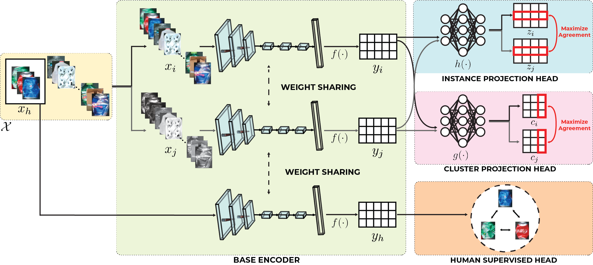
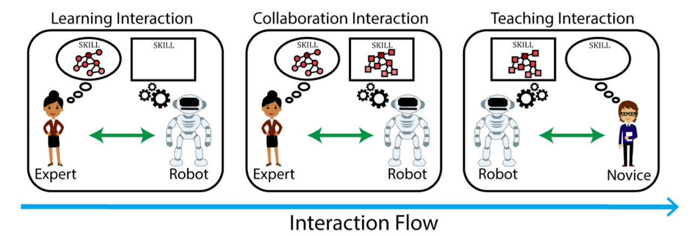

Tailoring Visual Object Representations to Human Requirements: A Case Study of a Recycling Robot
Debasmita Ghose, Michal Lewkowicz, Kaleb Gezahegn, Juilan Lee*, Timothy Adamson*, Marynel Vazquez, Brian Scassellati
Additional Stuff BLAH BLAH BLAH

A Social Robot for Improving Interruptions Tolerance and Employability in Adults with ASD
Rebecca Ramnauth, Emmanuel Adéníran, Timothy Adamson, Michal Lewkowicz, Rohit Giridharan, Caroline Reiner, Brian Scassellati
A growing population of adults with Autism Spectrum Disorders (ASD) chronically struggles to find and maintain employment. Works have shown that one barrier to employment for adults with ASD is dealing with workplace interruptions. In this project, we designed and evaluated an in-home autonomous robot system that aimed to improve users’ tolerance to interruptions through repeated practice. I was involved throughout the entire development process: writing scheduling scripts for a UNIX based system, building the ROS-based architecture in Python, setting up remote monitoring of in-person deployment with TeamViewer, developing cloud synchronization tools to observe data, implementing person detection with OpenCV and openkinect libraries, resolving networking issues, and creating data extraction scripts for results analysis.


Additional Stuff BLAH BLAH BLAH